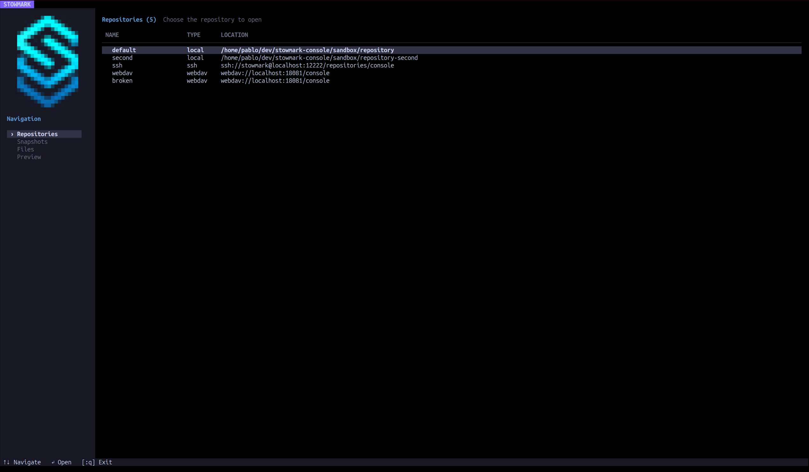

STOWMARK CONSOLE
Terminal interface
A compact, keyboard-driven interface for browsing and managing Stowmark repositories: list snapshots, browse and preview their files, create snapshots, verify them and restore them.
Overview

- List the snapshots of a repository, newest first.
- Browse the files of a snapshot by directory, straight from its manifest.
- Preview text, images and binary files stored in a snapshot.
- Create snapshots from a source directory, verify their integrity and restore them after an explicit confirmation.
- Switch between several configured repositories.
- Cancel a running operation with
Esc; navigate with the arrow keys or Vim-style bindings.
Every repository type supported by Stowmark works: local paths, SSH/SFTP, S3, SMB, WebDAV and Google Cloud Storage. It runs on Linux in a terminal with color support.
Installation
Download the Debian package for your architecture from the
downloads or the
latest release
and install it. Use the arm64 package when appropriate.
sudo apt install ./stowmark_console_*_linux_amd64.debTo build it from source you need Go 1.27.4 or newer:
git clone https://github.com/bruli-lab/stowmark-console.git
cd stowmark-console
go build -o stowmark_console ./cmd/console
sudo install -m 0755 stowmark_console /usr/local/bin/stowmark_consoleUsage
Set STOWMARK_REPOSITORY to the Stowmark repository and start the console:
STOWMARK_REPOSITORY="$HOME/backups/stowmark" stowmark_consoleIf the path does not contain a repository yet, the console asks for confirmation before initializing one there. Declining quits without touching the disk, or goes back to the repositories list when several are configured. On start, the logo and the version are shown while the repositories load; press any key to skip it.
Stowmark log output is written to a log file (see configuration) so it does not corrupt the screen.
Remote repositories
STOWMARK_REPOSITORY also accepts the remote repository
URLs of Stowmark, which reads the credentials from its own
environment variables. Snapshot sources and restore destinations
are always local directories.
| Backend | Credentials |
|---|---|
| SSH / SFTP | STOWMARK_SSH_PRIVATE_KEY, STOWMARK_SSH_KNOWN_HOSTS or the SSH agent |
| S3 | AWS_ACCESS_KEY_ID, AWS_SECRET_ACCESS_KEY, AWS_REGION (and STOWMARK_S3_ENDPOINT, STOWMARK_S3_PATH_STYLE for S3-compatible services) |
| SMB | STOWMARK_SMB_PASSWORD |
| WebDAV | STOWMARK_WEBDAV_USERNAME, STOWMARK_WEBDAV_PASSWORD |
| Google Cloud Storage | GOOGLE_APPLICATION_CREDENTIALS (and STOWMARK_GCS_ENDPOINT for emulators) |
Several repositories
The console reads the repositories to choose from in a YAML file,
~/.config/stowmark-console/repositories.yaml by default. Each repository has its own
initialization options and credentials.
repositories:
- name: laptop
url: ~/backups/stowmark
compression: zstd
compression_level: 3
- name: nas
url: smb://backup@nas:445/backups/stowmark
env:
STOWMARK_SMB_PASSWORD: secret
- name: cloud
url: s3://my-bucket/stowmark
private_key: ~/.config/stowmark/private.key
public_key: ~/.config/stowmark/public.key
env:
AWS_ACCESS_KEY_ID: AKIA...
AWS_SECRET_ACCESS_KEY: ...
AWS_REGION: eu-west-1| Field | Description |
|---|---|
name | Required. Unique name shown in the repositories list. |
url | Required. Path or URL of the repository; ~ is expanded for local paths. |
private_key, public_key | Same as STOWMARK_PRIVATE_KEY and STOWMARK_PUBLIC_KEY. |
compression, compression_level | Same as STOWMARK_COMPRESSION and STOWMARK_COMPRESSION_LEVEL. |
env | Environment variables set while the repository is open, such as the credentials of a remote backend. |
When STOWMARK_REPOSITORY is set, it is added first as the default repository.
With a single repository the console opens it on start; with several it starts on the repositories
list. :repo lists them again and opens the selected one, replacing the env
variables of the previous repository. Keep the file readable only by you (chmod 600) when
it holds credentials.
Configuration
The console is configured with environment variables. At least one repository must be configured,
with STOWMARK_REPOSITORY or in the repositories file.
| Variable | Description |
|---|---|
STOWMARK_REPOSITORY | Path or URL of the default repository. |
STOWMARK_PRIVATE_KEY | Private key used to create, verify and restore snapshots of an encrypted repository. |
STOWMARK_PUBLIC_KEY | Public key used to encrypt a repository when it is initialized. |
STOWMARK_COMPRESSION | Compression of a new repository: none (default), zstd, lz4, xz or gzip. |
STOWMARK_COMPRESSION_LEVEL | Compression level of a new repository. |
STOWMARK_CONSOLE_LOG_FILE | File that receives Stowmark log output. Defaults to ~/.cache/stowmark-console/console.log. |
STOWMARK_CONSOLE_CONFIG | Repositories file. Defaults to ~/.config/stowmark-console/repositories.yaml. |
The initialization options only apply when the console creates a new repository, and they are shown in
the confirmation dialog. Variables read by Stowmark itself, such as STOWMARK_LOG_LEVEL,
are honored as well.
Keyboard controls
Snapshots
| Key | Action |
|---|---|
↑ / k, ↓ / j | Select the previous or next snapshot. |
PgUp / b, PgDown / f, u / d | Move one page or half a page. |
g / Home, G / End | Select the first or last snapshot. |
Enter / → / l | Browse the files of the selected snapshot. |
c | Create a snapshot. |
v | Verify the selected snapshot. |
x | Restore the selected snapshot. |
r | Refresh the list. |
: | Open the command line. |
Ctrl+C | Exit. |
Files of a snapshot
| Key | Action |
|---|---|
↑ / k, ↓ / j | Select the previous or next entry. |
Enter / → / l | Open a directory or preview a file. |
o | Open the selected file with the system application. |
Esc / Backspace / ← / h | Go to the parent directory, or back to the snapshots. |
v / x | Verify or restore the snapshot being browsed. |
c | Create a snapshot. |
r | Reload the snapshot. |
File preview
| Key | Action |
|---|---|
↑ / k, ↓ / j | Scroll one line. |
← / h, → / l | Scroll long lines horizontally. |
PgUp / b, PgDown / f / Space | Scroll one page. |
g / Home, G / End | Go to the top or the bottom. |
o | Open the file with the system application. |
Esc / q | Close the preview. |
The preview adapts to the content of the file:
| Content | Preview |
|---|---|
| Text | Shown with line numbers. At most the first 1 MiB is read. |
| Images | PNG, JPEG and GIF up to 32 MiB, drawn with half-block characters scaled to the panel. Needs a terminal with true color support. |
| Other binary files | Shown in hexadecimal, like xxd, with the offset, the bytes and their printable characters. At most the first 1 MiB is read. |
o extracts the whole file from the snapshot to a temporary directory and opens it with
xdg-open (open on macOS), so it needs a graphical session. The temporary
directory is deleted when the console exits.
Command line
Press : in any view, type a command and press Enter. Esc closes the command line.
| Command | Action |
|---|---|
:q, :quit | Exit. |
:snap, :snapshots, :s | Go back to the snapshots list. |
:repo, :repos, :repositories | List the configured repositories and switch to another one. |
Creating and restoring
Creating a snapshot opens a form for the origin directory, prefilled with the source of the selected
snapshot. While you type, it suggests the subdirectories of the path and the origins of earlier
snapshots: Tab accepts the highlighted suggestion and ↑ / ↓ move
between them. The form tells you whether the path is an existing directory and only accepts
directories.
Restoring asks for a destination directory first. It defaults to
~/stowmark-restore/<snapshot-id>, never to the original source. The confirmation
shows the destination and warns when it already contains files, which would be overwritten. Only
y confirms the restore.
While an operation is running, Esc cancels it.